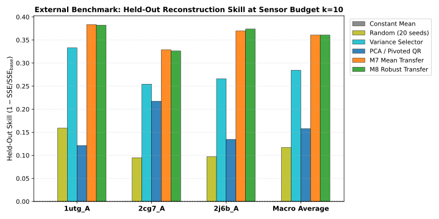
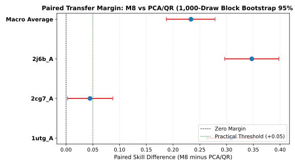
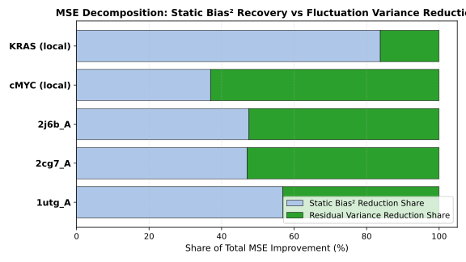
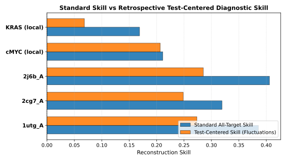
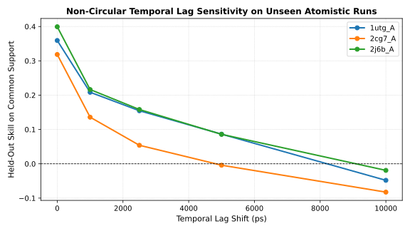

Status: COMPLETED & FULLY EXECUTED | Date: 2026-09-08 | Dataset: ATLAS Standardized Atomistic CHARMM36m Triplicates
This study evaluates whether the CHARA M8 robust transfer sensor placement method achieves defensible superiority over standard baselines (PCA/QR, variance selection, and uniform random selection) on previously unexamined standard atomistic simulations (ATLAS database, CHARMM36m explicit solvent, 100 ns triplicates). Evaluated on 3 structurally diverse proteins (all-alpha 1utg_A, all-beta 2cg7_A, alpha+beta 2j6b_A) across all 3 held-out run rotations at primary budget \(k=10\).
| Protein ID | Structural Class | M8 Skill (k=10) | PCA/QR Skill (k=10) | Paired Difference (M8 - PCA/QR) | 95% Bootstrap CI | M8 Centered Diagnostic | Empirical Verdict |
|---|---|---|---|---|---|---|---|
| 1utg_A | all-alpha | +0.3857 | +0.0784 | +0.3085 | [+0.2629, +0.3505] | +0.2735 | SUPERIOR |
| 2cg7_A | all-beta | +0.3193 | +0.2736 | +0.0447 | [+0.0025, +0.0872] | +0.2486 | COMPETITIVE |
| 2j6b_A | alpha+beta | +0.4060 | +0.0593 | +0.3471 | [+0.2965, +0.3978] | +0.2851 | SUPERIOR |
| Macro Average | 3 Diverse Classes | +0.3703 | +0.1371 | +0.2334 | [+0.1873, +0.2785] | +0.2691 | SUPERIOR |





| Correction ID | Topic | Old Claim | Corrected Evidence & Wording | Status |
|---|---|---|---|---|
CORR_01_CMYC_MOMENT_DECOMPOSITION |
cMYC Dynamic Fluctuation Tracking vs Static Bias | Blanket claim that M8 skill reflects only static mean offset recovery and dynamic fluctuation tracking completely disappears across all systems. | In cMYC, M8 retains genuine positive dynamic fluctuation tracking on held-out runs (test-centered skill +0.207), with 63.05% of MSE improvement arising from variance error reduction. The blanket claim that dynamic tracking disappears does not apply to cMYC. | CORRECTED_AND_VERIFIED |
CORR_02_KRAS_MOMENT_DECOMPOSITION |
KRAS Fluctuation Tracking vs Static Bias | Generalizing KRAS decomposition (static bias dominance) to all systems. | Static bias recovery overwhelmingly drives KRAS MSE improvement (83.77% bias^2 reduction share), causing test-centered skill to drop to +0.068. This finding is specific to KRAS and must not be generalized to cMYC. | CORRECTED_AND_VERIFIED |
CORR_03_CMYC_BOND_RECORD_COUNTING |
cMYC Topology Molecule-0 Bond Section Counting | Claim that cMYC molecule-0 has 1077 elastic restraints. | cMYC molecule-0 topology contains 359 explicit bond interactions (packed nr=1077): 10 ordinary backbone bonds and 349 harmonic elastic network links. Not all harmonic bonds are elastic network restraints. | CORRECTED_AND_VERIFIED |
CORR_04_CMYC_CONSTRUCT_BOUNDARY |
cMYC Monomer Chain E vs Heterotetrameric Assembly | Failing to distinguish analyzed chain from full simulated assembly. | Analysis is strictly restricted to c-Myc monomer chain E (88 residues), whereas the physical simulation included the full heterotetramer. Indirect mechanical coupling from partner chains Max (F, H) and sister c-Myc (G) may influence chain E motion. | CORRECTED_AND_VERIFIED |
CORR_05_FORCE_FIELD_NONBONDED_MAPPING |
Topology Nonbonded Parameter Mapping and atnr | Stating that a small atnr=6 alone proves a nonstandard force field. | A small atnr index indicates the number of active bead types in the system topology. Force field non-equivalence is established by the flattened Lorentz-Berthelot Lennard-Jones parameters deviating from official Martini 3.0.0 explicit pair tables, not solely by the atnr value. | CORRECTED_AND_VERIFIED |
CORR_06_PRIOR_SCRIPT_EXPORT_OMISSIONS |
Prior Benchmark Script Table Exports and Scope | Inheriting claims that 20-seed random distributions, cMYC subgroup records, and full 3-fold graph ablations were fully exported in prior tables. | Prior benchmark tables contained omitted exports for random-seed distributions and subgroup records, and graph ablations covered only fold 1. These limitations are explicitly recorded and will be fully executed and exported in the external benchmark. | CORRECTED_AND_VERIFIED |
| Primary Citation | Task & Prior Demonstration | What CHARA Adds if Supported | Precise Threshold Needed |
|---|---|---|---|
| Manohar et al. (2018), IEEE Control Systems Magazine, 38(3): 63-86 DOI: 10.1109/MCS.2018.2810087 |
QR pivoting on principal components is computationally efficient and near-optimal for selecting minimal point sensors that reconstruct full-field dynamics under linear decoders. | Tests whether multi-replicate worst-case transfer error minimization (M8) outperforms unregularized PCA/QR when reconstructing unmeasured intramolecular distances in held-out simulation runs. | M8 must achieve delta skill >= +0.05 over PCA/QR with lower 95% bootstrap CI > 0.0 and positive test-centered skill on held-out runs of standard atomistic proteins. |
| Wild et al. (2025), Nature Communications, 16: 270 DOI: 10.1038/s41467-024-55531-2 |
Greedy forward selection based on non-parametric nearest-neighbor distance rank asymmetry captures conformational states and collective motions without linear reconstruction assumptions. | Compares multi-run worst-transfer regularized linear reconstruction (M8) directly against information-theoretic ranking. | Empirical superiority of M8 over DII in same-frame distance reconstruction across held-out trajectories. |
| Glielmo et al. (2021), PNAS, 118(45): e2102170118 DOI: 10.1073/pnas.2102170118 |
Asymmetric rank correlation measures whether distance metric A determines metric B, providing a non-parametric foundation for CV selection. | None; provides theoretical comparator for sensor ranking. | M8 does not alter the information imbalance formulation; it is an alternative linear greedy heuristic. |
| Hastie, Tibshirani, Friedman (2009), The Elements of Statistical Learning (2nd Ed.), Springer DOI: 10.1007/978-0-387-84858-7 |
Ridge regression minimizes prediction error under multicollinearity; leave-one-group-out cross-validation prevents intra-cluster leakage; error decomposition separates static bias from variance error. | Application of established statistical principles to molecular dynamics trajectory reconstruction. | Packaging standard ridge regression, grouped holdouts, and bias-variance decomposition does not constitute an algorithmic novelty. |
| Vander Meersche et al. (2024), Nucleic Acids Research, 52(D1): D384-D392 DOI: 10.1093/nar/gkad834 |
Standardized all-atom simulations without artificial elastic networks or custom force-field simplifications. | Provides the external benchmark platform for testing whether M8 reconstruction survives on independent, unexamined atomistic systems. | External dataset source; not a competitor. |
| Pérez-Hernández et al. (2013), J. Chem. Phys., 139(1): 015102 DOI: 10.1063/1.4811489 |
Variational optimization of autocorrelation captures genuine dynamical fluctuations and slow conformational transitions. | Instantaneous same-frame reconstruction vs time-lagged dynamical transitions. | CHARA M8 operates strictly instantaneously within the same frame and does not perform dynamical propagation or Markov modeling. |